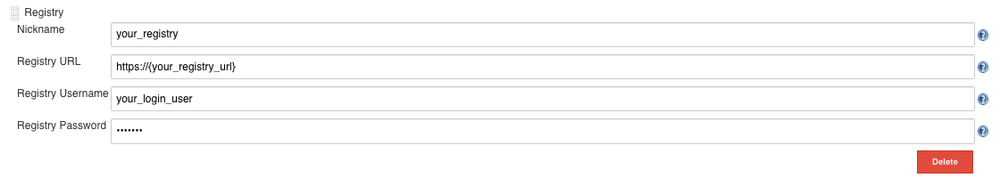

Detalhes do Jenkins
Configuração Detalhada para o Plugin do Jenkins
Contêineres fornecem uma maneira fácil e eficiente de implantar aplicativos. Mas as imagens de contêiner podem conter código aberto sobre o qual você não tem controle total. Muitas vulnerabilidades em projetos de código aberto foram relatadas, e você pode decidir usar essas bibliotecas com vulnerabilidades ou não, após escanear as imagens e revisar as informações de vulnerabilidade para elas.
O plug-in de scanner de vulnerabilidades SUSE® Security do Jenkins pode escanear as imagens após a imagem ser construída no Jenkins. O código-fonte do plug-in e a documentação mais recente podem ser encontrados aqui na SUSE® Security página do GitHub.
O plug-in suporta dois modos de escaneamento. O primeiro é o modo "Controlador & Scanner". O segundo é o modo de scanner autônomo. Você pode selecionar o modo de escaneamento na página de configuração do projeto. Por padrão, ele usa o modo "Controlador & Scanner".
Para o modo "Controlador & Scanner", você precisa implantar o SUSE® Security controlador e scanner na rede. Para escanear a imagem local (a imagem na máquina Jenkins), o "Controlador & Scanner" precisa estar instalado no mesmo nó onde a imagem existe.
Para o modo de scanner autônomo, o tempo de execução do Docker deve estar instalado no mesmo host que o Jenkins. Além disso, adicione o usuário jenkins ao grupo docker.
sudo usermod -aG docker jenkinsInstalação do Plug-in do Jenkins
Primeiro, vá para o Jenkins no seu navegador para procurar o SUSE® Security plug-in. Isso pode ser encontrado em:
→ Gerenciar Jenkins → Gerenciar Plugins → Disponível → filtro → pesquisa SUSE® Security Vulnerability Scanner →
Selecione-o e clique em install without restart.
Implante o contêiner do SUSE® Security Controlador e Scanner se você ainda não o fez em um host acessível pelo servidor Jenkins. Isso pode estar no mesmo servidor que o Jenkins, se desejado. Anote o endereço IP do host onde o Controlador está em execução. Nota: A porta padrão da API REST é 10443. Essa porta deve ser exposta através do Allinone ou Controlador por meio de um serviço no Kubernetes ou um mapeamento de porta (por exemplo, - 10443:10443) no arquivo de execução ou compose do Docker.
Além disso, certifique-se de que há um contêiner de scanner SUSE® Security implantado de forma independente e configurado para se conectar ao Controlador (se o Controlador estiver sendo usado).
Existem dois cenários para o escaneamento de imagens: escaneamento local e escaneamento de registro.
-
Escaneamento de Imagem Local. Se você usar o plugin para escanear imagens locais (antes de enviar para qualquer registro), pode escanear no mesmo host que o controlador/scanner ou configurar o scanner para acessar o mecanismo docker em um host remoto.
-
Varredura de Imagem de Registro. Se você usar o plugin para escanear imagens de registro (após enviar para qualquer registro, mas como parte do processo do Jenkins), o SUSE® Security Scanner pode ser instalado em qualquer nó na rede com conectividade entre o registro, SUSE® Security Scanner e Jenkins.
Configuração Global no Jenkins
Após instalar o plugin, encontre a seção ‘SUSE® Security Vulnerability Scanner’ na página de configuração global (Jenkins ‘Configure System’). Insira os valores para o IP do SUSE® Security Controlador, porta, nome de usuário e senha. Você pode clicar no botão ‘Test Connection’ para validar os valores. Ele mostrará ‘Connection Success’ ou uma mensagem de erro.
O valor de minutos de tempo-limite encerrará a etapa de construção dentro do tempo inserido. O valor padrão de 0 significa que nenhum tempo-limite ocorrerá.
Clique no ‘Add Registry’ para inserir valores para o registro que você usará em seu projeto. Se você estiver apenas escaneando imagens locais, não precisa adicionar um registro aqui.
Cenário 1: exemplo de configuração global para escaneamento de imagem local

Cenário 2: exemplo de configuração global para escaneamento de imagem de registro
Para configuração de registro global, siga as instruções acima para local, e depois adicione os detalhes do registro conforme abaixo.

Scanner Autônomo
Executar a varredura do Jenkins em modo autônomo é uma maneira leve de verificar vulnerabilidades de imagem no pipeline. O scanner é invocado dinamicamente e não é necessária a instalação da configuração do controlador. Isso é especialmente útil ao fazer varredura em uma imagem antes de ela ser enviada para um registro. Além disso, não há limite para quantas tarefas de varredura podem ser executadas ao mesmo tempo.
Para executar a varredura de vulnerabilidades em modo autônomo, o plugin do Jenkins precisa puxar a imagem do scanner para o host onde o agente está em execução, então você precisa inserir a URL do registro do Scanner SUSE® Security, o repositório da imagem e as credenciais, se necessário, na página de configuração do plugin SUSE® Security.
O resultado da varredura também pode ser enviado ao controlador e utilizado na função de controle de admissão. Neste caso, você realmente precisa de uma configuração do controlador e especificar como se conectar ao controlador na SUSE® Security página de configuração do plugin.
Configuração Local para escanear um Host Docker remoto
Pré-requisitos para escaneamento local em um Host Docker remoto
Para habilitar SUSE® Security a escanear uma imagem que não está no mesmo host que o controlador/allinone:
-
Certifique-se de que o socket da API de tempo de execução do Docker esteja exposto via TCP.
-
Adicione a seguinte variável de ambiente ao controller/allinone: SCANNER_DOCKER_URL=tcp://192.168.1.10:2376
Configuração do Projeto
No seu projeto, escolha o plugin 'SUSE® Security Scanner de Vulnerabilidades' no menu suspenso em 'Adicionar etapa de varredura.' Marque a caixa "Escanear com scanner autônomo" se você quiser realizar a varredura no modo de scanner autônomo. Por padrão, ele usa o modo "Controlador e Scanner" para realizar a varredura.
Escolha Local ou um nome de registro que é o apelido que você inseriu na configuração global. Insira o repositório e o nome da tag da imagem a ser escaneada. Você pode escolher as variáveis de ambiente padrão do Jenkins para o repositório ou tag, por exemplo, $JOB_NAME, $BUILD_TAG, $BUILD_NUMBER. Insira os valores para o número de vulnerabilidades altas ou médias e para qualquer nome das vulnerabilidades presentes para falhar o build.
Após o build ser finalizado, um SUSE® Security relatório será gerado. Ele mostrará os detalhes do escaneamento e erros, se houver.
Cenário 1: exemplo de configuração local

Cenário 2: exemplo de configuração de registro

Pipeline do Jenkins
Para o projeto de pipeline do Jenkins, você pode escrever seu próprio script de pipeline diretamente ou clicar no ‘pipeline syntax’ para gerar o script se você for novo na tarefa de estilo pipeline.

Selecione o SUSE® Security Scanner de Vulnerabilidades no menu suspenso, configure-o e gere o script.

Copie o script para o seu script de tarefa do Jenkins.
Cenário 1: Exemplo simples de script de pipeline local (para inserir no seu script de pipeline):
...
stage('Scan local image') \{
neuvector registrySelection: 'Local', repository: 'your_username/your_image'
\}
...Cenário 2: Exemplo simples de script de pipeline de registro (para inserir no seu script de pipeline):
...
stage('Scan local image') \{
neuvector registrySelection: 'your_registry', repository: 'your_username/your_image'
\}
...Estágios adicionais
Adicione seus próprios estágios de escaneamento de imagem pré e pós, por exemplo, no exemplo de visualização de estágio do Pipeline abaixo.

Você está agora pronto para iniciar suas compilações no Jenkins e acionar o SUSE® Security Scanner de Vulnerabilidades para relatar quaisquer vulnerabilidades!
Configurando o Pipeline para Construir Escaneamentos Paralelos em Grande Escala
Disponível com NeuVector v5.4.3 e versões posteriores, o plug-in do Jenkins do Scanner de Vulnerabilidades NeuVector v2.5 e posteriores suporta o escaneamento paralelo de até 2000 escaneamentos simultâneos ao usar o modo de chave de API. Para versões anteriores do NeuVector, o número máximo de escaneamentos simultâneos é limitado a 32 com o uso do modo Token. Clique para expandir e visualizar os exemplos abaixo de configurações de pipeline.
Usando Configuração de Modo Token (plug-in v2.4 e abaixo, ou v2.5 e posteriores)
pipeline {
agent any
environment {
REPO_NAME = 'your repo'
REGISTRY_SELECTION = 'your registry'
CONTROLLER = 'your controller'
MAX_CONCURRENT_SCANS = 32
}
stages {
stage('Parallel Vulnerability Scanning') {
steps {
script {
// There is a limit of 250 tags per list (by Jenkins)
TAGS_LIST_PART1 = ["your tags"...]
TAGS_LIST_PART2 = ["your tags"...]
TAGS_LIST_PART3 = ["your tags"...]
TAGS_LIST_PART4 = ["your tags"...]
TAGS_LIST_PART5 = ["your tags"...]...
def allTags = TAGS_LIST_PART1 + TAGS_LIST_PART2 + TAGS_LIST_PART3 + TAGS_LIST_PART4 + TAGS_LIST_PART5
def batches = allTags.collate(MAX_CONCURRENT_SCANS.toInteger()) // Ensure MAX_CONCURRENT_SCANS is an integer
def batchCounter = 1 for (batch in batches) {
stage("Batch ${batchCounter}") {
def scans = [:]
batch.each { tag ->
def currentTag = tag
scans["Scan ${currentTag}"] = {
stage("Scan ${currentTag}") {
neuvector(
controllerEndpointUrlSelection: CONTROLLER,
registrySelection: REGISTRY_SELECTION,
repository: REPO_NAME,
scanTimeout: 20,
tag: "${currentTag}"
)
echo "Scan for tag ${currentTag} complete"
}
}
}
parallel scans
}
batchCounter++
}
}
}
}
}
}Usando Modo de Chave de API (plug-in v2.5 e posteriores)
pipeline {
agent any
environment {
REPO_NAME = 'your repo'
REGISTRY_SELECTION = 'your registry'
CONTROLLER = 'your controller'
}
stages {
stage('Parallel Vulnerability Scanning') {
steps {
script {
// There is a limit of 250 tags per list (by Jenkins)
TAGS_LIST_PART1 = ["your tags"...]
TAGS_LIST_PART2 = ["your tags"...]
TAGS_LIST_PART3 = ["your tags"...]
TAGS_LIST_PART4 = ["your tags"...]
TAGS_LIST_PART5 = ["your tags"...]...
def allTags = TAGS_LIST_PART1 + TAGS_LIST_PART2 + TAGS_LIST_PART3 + TAGS_LIST_PART4 + TAGS_LIST_PART5
def scans = [:]
allTags.each { tag ->
def currentTag = tag
scans["Scan ${currentTag}"] = {
stage("Scan ${currentTag}") {
neuvector(
controllerEndpointUrlSelection: CONTROLLER,
registrySelection: REGISTRY_SELECTION,
repository: REPO_NAME,
scanTimeout: 20,
tag: "${currentTag}"
)
echo "Scan for tag ${currentTag} complete"
}
}
}
parallel scans
}
}
}
}
}Exemplo de Rota e Token do OpenShift
Para configurar o plug-in usando uma rota do OpenShift para acesso ao controlador, adicione a rota no campo de IP do controlador.

Para usar autenticação baseada em token no registro do OpenShift, use NONAME como usuário e insira o token na senha.
Caso de Uso Especial para Jenkins no Mesmo Cluster Kubernetes
Para realizar escaneamento na fase de construção onde o software Jenkins está sendo executado no mesmo cluster Kubernetes que o scanner, certifique-se de que o scanner e o Jenkins estejam configurados para rodar no mesmo nó. O nó precisa ser rotulado para que os contêineres do Jenkins e do scanner rodem no mesmo nó, pois o scanner precisa de acesso ao docker.sock do nó local para acessar a imagem.